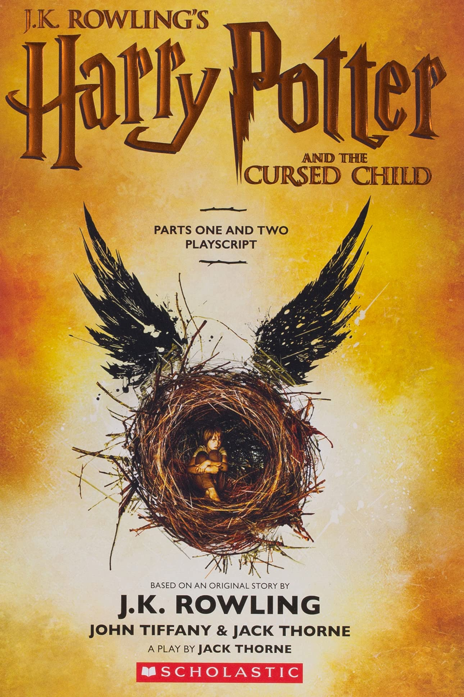

The Harry Potter series
The Harry Potter books series consists of 7 books. There are also 8 movie adaptations, as well as some spinoffs: "Fantastic Beasts" and "The Cursed Child". There are also three smaller spinoff textbooks and storybooks (in universe) that have been published as readable physical books: "Fantastic Beast and Where to Find Them", "Quidditch through the Ages", and "The Tales of Beedle the Bard".
The Original Series
The original series follows Harry as the main character, and it's the most popular branch of the Harry Potter universe.
Fantastic Beasts

Fantastic Beast is a prequal series which follows Newt Scamander, a magizoologist.
The Cursed Child

The Cursed Child is a sequal. It mostly follows Scorpius Malfoy and Albus Potter. It's the most contriversial branch of the series, as it plays around with a lot of plot and timeline elements a bit too much.